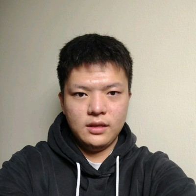

Hi! I am Lane Xie, a junior in Computer Science at University of Wisconsin Madison
I focus on software engineering and scalable systems. During my internship at NARI Technology, I developed a microservice-based power monitoring application, working closely with teams to ensure high system performance using technologies like Spring Boot and Kafka.
I also contribute to open-source projects, particularly with CheckStyle, where I focus on improving code quality. My involvement in the Software Development Club has enhanced my skills in backend development and teamwork, as we built a social media platform using a MERN stack.
